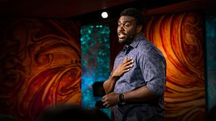

Search Results for

Yve Blake: For the love of fangirls
When you think of fangirls, what comes to mind: large swaths of fandom (usually for a boyband) whose feelings culminate in tears and joyful screams? Perhaps you grimace or roll your eyes at the thought. In this fun, lively talk, playwright Yve Blake asks us to reevaluate our reaction to the misunderstood passion and power of fangirls, emphasizing why we should all embrace our own unbridled enthusiasm.
Meet the founder of the blog revolution
The founding mother of the blog revolution, Movable Type's Mena Trott, talks about the early days of blogging, when she realized that giving regular people the power to share our lives online is the key to building a friendlier, more connected world.
William Black: How to rob a bank (from the inside, that is)
William Black is a former bank regulator who’s seen firsthand how banking systems can be used to commit fraud — and how “liar's loans” and other tricky tactics led to the 2008 US banking crisis that threatened the international economy. In this engaging talk, Black, now an academic, reveals the best way to rob a bank — from the inside.

Marcus Bullock: An app that helps incarcerated people stay connected to their families
Over his eight-year prison sentence, Marcus Bullock was sustained by his mother's love -- and by the daily letters and photos she sent of life on the outside. Years later, as an entrepreneur, Bullock asked himself: How can I make it easier for all families to stay connected during incarceration? Enter FlikShop: an app he developed that lets families send quick postcards to loved ones in prison and help keep open a critical line of support.